정보처리기사 (2022-04-24 기출문제)
1과목: 소프트웨어 설계
1. UML 다이어그램 중 순차 다이어그램에 대한 설명으로 틀린 것은?
- 객체 간의 동적 상호작용을 시간 개념을 중심으로 모델링 하는 것이다.
- 주로 시스템의 정적 측면을 모델링하기 위해 사용한다.
- 일반적으로 다이어그램의 수직 방향이 시간의 흐름을 나타낸다.
- 회귀 메시지(Self-Message), 제어블록(Statement block) 등으로 구성된다.
(정답률: 61%)

2. 메시지 지향 미들웨어(Message-Oriented Middleware, MOM)에 대한 설명으로 틀린 것은?
- 느리고 안정적인 응답보다는 즉각적인 응답이 필요한 온라인 업무에 적합하다.
- 독립적인 애플리케이션을 하나의 통합된 시스템으로 묶기 위한 역할을 한다.
- 송신측과 수신측의 연결 시 메시지 큐를 활용하는 방법이 있다.
- 상이한 애플리케이션 간 통신을 비동기 방식으로 지원한다.
(정답률: 45%)
3. 익스트림 프로그래밍에 대한 설명으로 틀린 것은?
- 대표적인 구조적 방법론 중 하나이다.
- 소규모 개발 조직이 불확실하고 변경이 많은 요구를 접하였을 때 적절한 방법이다.
- 익스트림 프로그래밍을 구동시키는 원리는 상식적인 원리와 경험을 최대한 끌어 올리는 것이다.
- 구체적인 실천 방법을 정의하고 있으며, 개발 문서 보다는 소스코드에 중점을 둔다.
(정답률: 48%)
4. 유스케이스(Use Case)의 구성 요소 간의 관계에 포함되지 않는 것은?
- 연관
- 확장
- 구체화
- 일반화
(정답률: 48%)
5. 요구사항 분석에서 비기능적(Nonfunctional) 요구에 대한 설명으로 옳은 것은?
- 시스템의 처리량(Throughput), 반응 시간 등의 성능 요구나 품질 요구는 비기능적 요구에 해당하지 않는다.
- '차량 대여 시스템이 제공하는 모든 화면이 3초 이내에 사용자에게 보여야 한다'는 비기능적 요구이다.
- 시스템 구축과 관련된 안전, 보안에 대한 요구사항들은 비기능적 요구에 해당하지 않는다.
- '금융 시스템은 조회, 인출, 입금, 송금의 기능이 있어야 한다'는 비기능적 요구이다.
(정답률: 45%)
6. 정보공학 방법론에서 데이터베이스 설계의 표현으로 사용하는 모델링 언어는?
- Package Diagram
- State Transition Diagram
- Deployment Diagram
- Entity-Relationship Diagram
(정답률: 60%)
7. 미들웨어(Middleware)에 대한 설명으로 틀린 것은?
- 여러 운영체제에서 응용 프로그램들 사이에 위치한 소프트웨어이다.
- 미들웨어의 서비스 이용을 위해 사용자가 정보 교환 방법 등의 내부 동작을 쉽게 확인할 수 있어야 한다.
- 소프트웨어 컴포넌트를 연결하기 위한 준비된 인프라 구조를 제공한다.
- 여러 컴포넌트를 1대 1, 1대 다, 다대 다 등 여러 가지 형태로 연결이 가능하다.
(정답률: 54%)
8. UI의 설계 지침으로 틀린 것은?
- 이해하기 편하고 쉽게 사용할 수 있는 환경을 제공해야 한다.
- 주요 기능을 메인 화면에 노출하여 조작이 쉽도록 하여야 한다.
- 치명적인 오류에 대한 부정적인 사항은 사용자가 인지할 수 없도록 한다.
- 사용자의 직무, 연령, 성별 등 다양한 계층을 수용하여야 한다.
(정답률: 70%)
9. 객체지향 개념에서 다형성(Polymorphism)과 관련한 설명으로 틀린 것은?
- 다형성은 현재 코드를 변경하지 않고 새로운 클래스를 쉽게 추가할 수 있게 한다.
- 다형성이란 여러 가지 형태를 가지고 있다는 의미로, 여러 형태를 받아들일 수 있는 특징을 말한다.
- 메소드 오버라이딩(Overriding)은 상위 클래스에서 정의한 일반 메소드의 구현을 하위 클래스에서 무시하고 재정의할 수 있다.
- 메소드 오버로딩(Overloading)의 경우 매개 변수 타입은 동일하지만 메소드명을 다르게 함으로써 구현, 구분할 수 있다.
(정답률: 42%)
10. 소프트웨어 개발 영역을 결정하는 요소 중 다음 사항과 관계있는 것은?
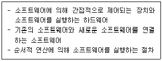
- 기능(Function)
- 성능(Performance)
- 제약 조건(Constraint)
- 인터페이스(Interface)
(정답률: 60%)
11. 객체에 대한 설명으로 틀린 것은?
- 객체는 상태, 동작, 고유 식별자를 가진 모든 것이라 할 수 있다.
- 객체는 공통 속성을 공유하는 클래스들의 집합이다.
- 객체는 필요한 자료 구조와 이에 수행되는 함수들을 가진 하나의 독립된 존재이다.
- 객체의 상태는 속성값에 의해 정의된다.
(정답률: 53%)
12. 속성과 관련된 연산(Operation)을 클래스 안에 묶어서 하나로 취급하는 것을 의미하는 객체지향 개념은?
- Inheritance
- Class
- Encapsulation
- Association
(정답률: 46%)
13. 애자일(Agile) 프로세스 모델에 대한 설명으로 틀린 것은?
- 변화에 대한 대응보다는 자세한 계획을 중심으로 소프트웨어를 개발한다.
- 프로세스와 도구 중심이 아닌 개개인과의 상호소통을 통해 의견을 수렴한다.
- 협상과 계약보다는 고객과의 협력을 중시한다.
- 문서 중심이 아닌, 실행 가능한 소프트웨어를 중시한다.
(정답률: 66%)
14. 명백한 역할을 가지고 독립적으로 존재할 수 있는 시스템의 부분으로 넓은 의미에서는 재사용되는 모든 단위라고 볼 수 있으며, 인터페이스를 통해서만 접근할 수 있는 것은?
- Model
- Sheet
- Component
- Cell
(정답률: 57%)
15. GoF(Gang of Four) 디자인 패턴을 생성, 구조, 행동 패턴의 세 그룹으로 분류할 때, 구조 패턴이 아닌 것은?
- Adapter 패턴
- Bridge 패턴
- Builder 패턴
- Proxy 패턴
(정답률: 41%)
16. UI와 관련된 기본 개념 중 하나로, 시스템의 상태와 사용자의 지시에 대한 효과를 보여주어 사용자가 명령에 대한 진행 상황과 표시된 내용을 해석할 수 있도록 도와주는 것은?
- Feedback
- Posture
- Module
- Hash
(정답률: 62%)
17. UI의 종류로 멀티 터치(Multi-touch), 동작 인식(Gesture Recognition) 등 사용자의 자연스러운 움직임을 인식하여 서로 주고받는 정보를 제공하는 사용자 인터페이스를 의미하는 것은?
- GUI(Graphical User Interface)
- OUI(Organic User Interface)
- NUI(Natural User Interface)
- CLI(Command Line Interface)
(정답률: 53%)
18. 소프트웨어 모델링과 관련한 설명으로 틀린 것은?
- 모델링 작업의 결과물은 다른 모델링 작업에 영향을 줄 수 없다.
- 구조적 방법론에서는 DFD(Data Flow Diagram), DD(Data Dictionary) 등을 사용하여 요구 사항의 결과를 표현한다.
- 객체지향 방법론에서는 UML 표기법을 사용한다.
- 소프트웨어 모델을 사용할 경우 개발될 소프트웨어에 대한 이해도 및 이해 당사자 간의 의사소통 향상에 도움이 된다.
(정답률: 59%)
19. 유스케이스 다이어그램(Use Case Diagram)에 관련된 내용으로 틀린 것은?
- 시스템과 상호작용하는 외부시스템은 액터로 파악해서는 안된다.
- 유스케이스는 사용자 측면에서의 요구사항으로, 사용자가 원하는 목표를 달성하기 위해 수행할 내용을 기술한다.
- 시스템 액터는 다른 프로젝트에서 이미 개발되어 사용되고 있으며, 본 시스템과 데이터를 주고받는 등 서로 연동되는 시스템을 말한다.
- 액터가 인식할 수 없는 시스템 내부의 기능을 하나의 유스케이스로 파악해서는 안된다.
(정답률: 41%)
20. 소프트웨어 아키텍처 모델 중 MVC(Model-View-Controller)와 관련한 설명으로 틀린 것은?
- MVC 모델은 사용자 인터페이스를 담당하는 계층의 응집도를 높일 수 있고, 여러 개의 다른 UI를 만들어 그 사이에 결합도를 낮출 수 있다.
- 모델(Model)은 뷰(View)와 제어(Controller) 사이에서 전달자 역할을 하며, 뷰마다 모델 서브시스템이 각각 하나씩 연결된다.
- 뷰(View)는 모델(Model)에 있는 데이터를 사용자 인터페이스에 보이는 역할을 담당한다.
- 제어(Controller)는 모델(Model)에 명령을 보냄으로써 모델의 상태를 변경할 수 있다.
(정답률: 45%)
2과목: 소프트웨어 개발
21. 통합 테스트(Integration Test)와 관련한 설명으로 틀린 것은?
- 시스템을 구성하는 모듈의 인터페이스와 결합을 테스트하는 것이다.
- 하향식 통합 테스트의 경우 넓이 우선(Breadth First) 방식으로 테스트를 할 모듈을 선택할 수 있다.
- 상향식 통합 테스트의 경우 시스템 구조도의 최상위에 있는 모듈을 먼저 구현하고 테스트한다.
- 모듈 간의 인터페이스와 시스템의 동작이 정상적으로 잘되고 있는지를 빨리 파악하고자 할 때 상향식 보다는 하향식 통합 테스트를 사용하는 것이 좋다.
(정답률: 47%)
22. 다음과 같이 레코드가 구성되어 있을 때, 이진 검색 방법으로 14를 찾을 경우 비교되는 횟수는?
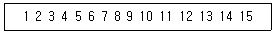
- 2
- 3
- 4
- 5
(정답률: 38%)
23. 소프트웨어 공학에서 워크스루(Walktiirough)에 대한 설명으로 틀린 것은?
- 사용사례를 확장하여 명세하거나 설계 다이어그램, 원시코드, 테스트 케이스 등에 적용할 수 있다.
- 복잡한 알고리즘 또는 반복, 실시간 동작, 병행 처리와 같은 기능이나 동작을 이해하려고 할 때 유용하다.
- 인스펙션(Inspection)과 동일한 의미를 가진다.
- 단순한 테스트 케이스를 이용하여 프로덕트를 수작업으로 수행해 보는 것이다.
(정답률: 36%)
24. 소프트웨어의 개발과정에서 소프트웨어의 변경사항을 관리하기 위해 개발된 일련의 활동을 뜻하는 것은?
- 복호화
- 형상관리
- 저작권
- 크랙
(정답률: 63%)
25. 테스트 케이스와 관련한 설명으로 틀린 것은?
- 테스트의 목표 및 테스트 방법을 결정하기 전에 테스트 케이스를 작성해야 한다.
- 프로그램에 결함이 있더라도 입력에 대해 정상적인 결과를 낼 수 있기 때문에 결함을 검사할 수 있는 테스트 케이스를 찾는 것이 중요하다.
- 개발된 서비스가 정의된 요구 사항을 준수하는지 확인하기 위한 입력 값과 실행 조건, 예상 결과의 집합으로 볼 수 있다.
- 테스트 케이스 실행이 통과되었는지 실패하였는지 판단하기 위한 기준을 테스트 오라클(Test Oracle)이라고 한다.
(정답률: 40%)
26. 객체지향 개념을 활용한 소프트웨어 구현과 관련한 설명 중 틀린 것은?
- 객체(Object)란 필요한 자료 구조와 수행되는 함수들을 가진 하나의 독립된 존재이다.
- JAVA에서 정보은닉(Information Hiding)을 표기할 때 private의 의미는 '공개'이다.
- 상속(Inheritance)은 개별 클래스를 상속 관계로 묶음으로써 클래스 간의 체계화된 전체 구조를 파악하기 쉽다는 장점이 있다.
- 같은 클래스에 속하는 개개의 객체이자 하나의 클래스에서 생성된 객체를 인스턴스(Instance)라고 한다.
(정답률: 64%)
27. DRM(Digital Rights Management)과 관련한 설명으로 틀린 것은?
- 디지털 콘텐츠와 디바이스의 사용을 제한하기 위해 하드웨어 제조업자, 저작권자, 출판업자 등이 사용할 수 있는 접근 제어 기술을 의미한다.
- 디지털 미디어의 생명 주기 동안 발생하는 사용 권한 관리, 과금, 유통 단계를 관리하는 기술로도 볼 수 있다.
- 클리어링 하우스(Clearing House)는 사용자에게 콘텐츠 라이센스를 발급하고 권한을 부여해주는 시스템을 말한다.
- 원본을 안전하게 유통하기 위한 전자적 보안은 고려하지 않기 때문에 불법 유통과 복제의 방지는 불가능하다.
(정답률: 55%)
28. 위험 모니터링의 의미로 옳은 것은?
- 위험을 이해하는 것
- 첫 번째 조치로 위험을 피할 수 있도록 하는 것
- 위험 발생 후 즉시 조치하는 것
- 위험 요소 징후들에 대하여 계속적으로 인지하는 것
(정답률: 54%)
29. 동시에 소스를 수정하는 것을 방지하며 다른 방향으로 진행된 개발 결과를 합치거나 변경 내용을 추적할 수 있는 소프트웨어 버전 관리 도구는?
- RCS(Revision Control System)
- RTS(Reliable Transfer Service)
- RPC(Remote Procedure Call)
- RVS(Relative Version System)
(정답률: 40%)
30. 화이트박스 테스트와 관련한 설명으로 틀린 것은?
- 화이트박스 테스트의 이해를 위해 논리흐름도(Logic-Flow Diagram)를 이용할 수 있다.
- 테스트 데이터를 이용해 실제 프로그램을 실행함으로써 오류를 찾는 동적 테스트(Dynamic Test)에 해당한다.
- 프로그램의 구조를 고려하지 않기 때문에 테스트 케이스는 프로그램 또는 모듈의 요구나 명세를 기초로 결정한다.
- 테스트 데이터를 선택하기 위하여 검증기준(Test Coverage)을 정한다.
(정답률: 46%)
31. 알고리즘과 관련한 설명으로 틀린 것은?
- 주어진 작업을 수행하는 컴퓨터 명령어를 순서대로 나열한 것으로 볼 수 있다.
- 검색(Searching)은 정렬이 되지 않은 데이터 혹은 정렬이 된 데이터 중에서 키값에 해당되는 데이터를 찾는 알고리즘이다.
- 정렬(Sorting)은 흩어져있는 데이터를 키값을 이용하여 순서대로 열거하는 알고리즘이다.
- 선형 검색은 검색을 수행하기 전에 반드시 데이터의 집합이 정렬되어 있어야 한다.
(정답률: 45%)
32. 버블 정렬을 이용하여 다음 자료를 오름차순으로 정렬할 경우 PASS 1의 결과는?
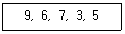
- 6, 9, 7, 3, 5
- 3, 9, 6, 7, 5
- 3, 6, 7, 9, 5
- 6, 7, 3, 5, 9
(정답률: 41%)
33. 다음은 인스펙션(Inspection) 과정을 표현한 것이다. (가)~(마)에 들어갈 말을 보기에서 찾아 바르게 연결한 것은?
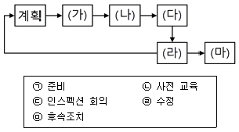
- (가) - ㉡, (나) - ㉢
- (나) - ㉠, (다) - ㉢
- (다) - ㉢, (라) - ㉤
- (라) - ㉣, (마) - ㉢
(정답률: 42%)
34. 소프트웨어를 보다 쉽게 이해할 수 있고 적은 비용으로 수정할 수 있도록 겉으로 보이는 동작의 변화 없이 내부구조를 변경하는 것은?
- Refactoring
- Architecting
- Specification
- Renewal
(정답률: 46%)
35. 단위 테스트(Unit Test)와 관련한 설명으로 틀린 것은?
- 구현 단계에서 각 모듈의 개발을 완료한 후 개발자가 명세서의 내용대로 정확히 구현되었는지 테스트한다.
- 모듈 내부의 구조를 구체적으로 볼 수 있는 구조적 테스트를 주로 시행한다.
- 필요 데이터를 인자를 통해 넘겨주고, 테스트 완료 후 그 결과값을 받는 역할을 하는 가상의 모듈을 테스트 스텁(Stub)이라고 한다.
- 테스트할 모듈을 호출하는 모듈도 있고, 테스트할 모듈이 호출하는 모듈도 있다.
(정답률: 34%)
36. IDE(Integrated Development Environment) 도구의 각 기능에 대한 설명으로 틀린 것은?
- Coding - 프로그래밍 언어를 가지고 컴퓨터 프로그램을 작성할 수 있는 환경을 제공
- Compile - 저급언어의 프로그램을 고급언어 프로그램으로 변환하는 기능
- Debugging - 프로그램에서 발견되는 버그를 찾아 수정할 수 있는 기능
- Deployment - 소프트웨어를 최종 사용자에게 전달하기 위한 기능
(정답률: 48%)
37. 아래 Tree 구조에 대하여 후위 순회(Postorder) 한 결과는?
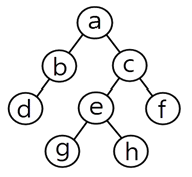
- a → b → d → c → e → g → h → f
- d → b → g → h → e → f → c → a
- d → b → a → g → e → h → c → f
- a → b → d → g → e → h → c → f
(정답률: 49%)
38. 인터페이스 구현 시 사용하는 기술로 속성-값 쌍(Attribute-Value Pairs)으로 이루어진 데이터 오브젝트를 전달하기 위해 사용하는 개방형 표준 포맷은?
- JSON
- HTML
- AVPN
- DOF
(정답률: 54%)
39. 순서가 있는 리스트에서 데이터의 삽입(Push), 삭제(Pop)가 한 쪽 끝에서 일어나며 LIFO(Last-In-First-Out)의 특징을 가지는 자료구조는?
- Tree
- Graph
- Stack
- Queue
(정답률: 57%)
40. 다음 중 단위 테스트 도구로 사용될 수 없는 것은?
- CppUnit
- JUnit
- HttpUnit
- IgpUnit
(정답률: 34%)
3과목: 데이터베이스 구축
41. 다음 조건을 모두 만족하는 정규형은?
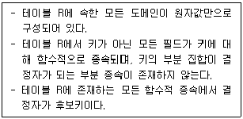
- BCNF
- 제1정규형
- 제2정규형
- 제3정규형
(정답률: 38%)
42. 데이터베이스의 트랜잭션 성질들 중에서 다음 설명에 해당하는 것은?
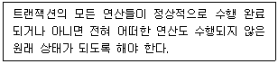
- Atomicity
- Consistency
- Isolation
- Durability
(정답률: 41%)
43. 분산 데이터베이스 시스템과 관련한 설명으로 틀린 것은?
- 물리적으로 분산된 데이터베이스 시스템을 논리적으로 하나의 데이터베이스 시스템처럼 사용할 수 있도록 한 것이다.
- 물리적으로 분산되어 지역별로 필요한 데이터를 처리할 수 있는 지역 컴퓨터(Local Computer)를 분산 처리기(Distributed Processor)라고 한다.
- 분산 데이터베이스 시스템을 위한 통신 네트워크 구조가 데이터 통신에 영향을 주므로 효율적으로 설계해야 한다.
- 데이터베이스가 분산되어 있음을 사용자가 인식할 수 있도록 분산 투명성(Distribution Transparency)을 배제해야 한다.
(정답률: 58%)
44. 다음 테이블을 보고 강남지점의 판매량이 많은 제품부터 출력되도록 할 때 다음 중 가장 적절한 SQL 구문은? (단, 출력은 제품명과 판매량이 출력되도록 한다.)
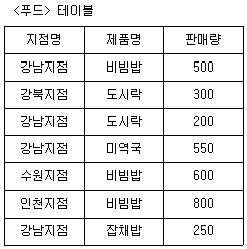
- SELECT 제품명, 판매량 FROM 푸드
ORDER BY 판매량 ASC; - SELECT 제품명, 판매량 FROM 푸드
ORDER BY 판매량 DESC; - SELECT 제품명, 판매량 FROM 푸드
WHERE 지점명 = '강남지점'
ORDER BY 판매량 ASC; - SELECT 제품명, 판매량 FROM 푸드
WHERE 지점명 = '강남지점'
ORDER BY 판매량 DESC;
(정답률: 51%)
45. 데이터베이스의 인덱스와 관련한 설명으로 틀린 것은?
- 문헌의 색인, 사전과 같이 데이터를 쉽고 빠르게 찾을 수 있도록 만든 데이터 구조이다.
- 테이블에 붙여진 색인으로 데이터 검색 시 처리 속도 향상에 도움이 된다.
- 인덱스의 추가, 삭제 명령어는 각각 ADD, DELETE이다.
- 대부분의 데이터베이스에서 테이블을 삭제하면 인덱스도 같이 삭제된다.
(정답률: 53%)
46. 물리적 데이터베이스 구조의 기본 데이터 단위인 저장 레코드의 양식을 설계할 때 고려 사항이 아닌 것은?
- 데이터 타입
- 데이터 값의 분포
- 트랜잭션 모델링
- 접근 빈도
(정답률: 34%)
47. SQL의 기능에 따른 분류 중에서 REVOKE문과 같이 데이터의 사용 권한을 관리하는데 사용하는 언어는?
- DDL(Data Definition Language)
- DML(Data Manipulation Language)
- DCL(Data Control Language)
- DUL(Data User Language)
(정답률: 50%)
48. 데이터 사전에 대한 설명으로 틀린 것은?
- 시스템 카탈로그 또는 시스템 데이터베이스라고도 한다.
- 데이터 사전 역시 데이터베이스의 일종이므로 일반 사용자가 생성, 유지 및 수정 할 수 있다.
- 데이터베이스에 대한 데이터인 메타데이터(Metadata)를 저장하고 있다.
- 데이터 사전에 있는 데이터에 실제로 접근하는 데 필요한 위치 정보는 데이터 디렉토리(Data Directory)라는 곳에서 관리한다.
(정답률: 54%)
49. 데이터베이스에서 릴레이션에 대한 설명으로 틀린 것은?
- 모든 튜플은 서로 다른 값을 가지고 있다.
- 하나의 릴레이션에서 튜플은 특정한 순서를 가진다.
- 각 속성은 릴레이션 내에서 유일한 이름을 가진다.
- 모든 속성 값은 원자 값(atomic value)을 가진다.
(정답률: 48%)
50. 데이터베이스에서의 뷰(View)에 대한 설명으로 틀린 것은?
- 뷰는 다른 뷰를 기반으로 새로운 뷰를 만들 수 있다.
- 뷰는 일종의 가상 테이블이며, update에는 제약이 따른다.
- 뷰는 기본 테이블을 만드는 것처럼 create view를 사용하여 만들 수 있다.
- 뷰는 논리적으로 존재하는 기본 테이블과 다르게 물리적으로만 존재하며 카탈로그에 저장된다.
(정답률: 51%)
51. 트랜잭션의 상태 중 트랜잭션의 마지막 연산이 실행된 직후의 상태로, 모든 연산의 처리는 끝났지만 트랜잭션이 수행한 최종 결과를 데이터베이스에 반영하지 않은 상태는?
- Active
- Partially Committed
- Committed
- Aborted
(정답률: 39%)
52. SQL의 명령을 사용 용도에 따라 DDL, DML, DCL로 구분할 경우, 그 성격이 나머지 셋과 다른 것은?
- SELECT
- UPDATE
- INSERT
- GRANT
(정답률: 59%)
53. 키의 종류 중 유일성과 최소성을 만족하는 속성 또는 속성들의 집합은?
- Atomic key
- Super key
- Candidate key
- Test key
(정답률: 41%)
54. 데이터베이스에서 개념적 설계 단계에 대한 설명으로 틀린 것은?
- 산출물로 E-R Diagram을 만들 수 있다.
- DBMS에 독립적인 개념 스키마를 설계한다.
- 트랜잭션 인터페이스를 설계 및 작성한다.
- 논리적 설계 단계의 앞 단계에서 수행된다.
(정답률: 31%)
55. 테이블의 기본키(Primary Key)로 지정된 속성에 관한 설명으로 가장 거리가 먼 것은?
- NOT NULL로 널 값을 가지지 않는다.
- 릴레이션에서 튜플을 구별할 수 있다.
- 외래키로 참조될 수 있다.
- 검색할 때 반드시 필요하다.
(정답률: 43%)
56. 데이터 모델의 구성 요소 중 데이터 구조에 따라 개념 세계나 컴퓨터 세계에서 실제로 표현된 값들을 처리하는 작업을 의미하는 것은?
- Relation
- Data Structure
- Constraint
- Operation
(정답률: 37%)
57. 다음 [조건]에 부합하는 SQL문을 작성하고자 할 때, [SQL문]의 빈칸에 들어갈 내용으로 옳은 것은? (단, '팀코드' 및 '이름'은 속성이며, '직원'은 테이블이다.)
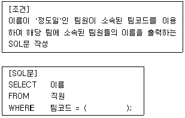
- WHERE 이름 = '정도일'
- SELECT 팀코드 FROM 이름
WHERE 직원 = '정도일' - WHERE 직원 = '정도일'
- SELECT 팀코드 FROM 직원
WHERE 이름 = '정도일'
(정답률: 51%)
58. 무결성 제약조건 중 개체 무결성 제약조건에 대한 설명으로 옳은 것은?
- 릴레이션 내의 튜플들이 각 속성의 도메인에 정해진 값만을 가져야 한다.
- 기본키는 NULL 값을 가져서는 안되며 릴레이션 내에 오직 하나의 값만 존재해야 한다.
- 자식 릴레이션의 외래키는 부모 릴레이션의 기본키와 도메인이 동일해야 한다.
- 자식 릴레이션의 값이 변경될 때 부모 릴레이션의 제약을 받는다.
(정답률: 39%)
59. 관계 데이터 모델에서 릴레이션(Relation)에 포함되어 있는 튜플(Tuple)의 수를 무엇이라고 하는가?
- Degree
- Cardinality
- Attribute
- Cartesian product
(정답률: 45%)
60. 사용자 'PARK'에게 테이블을 생성할 수 있는 권한을 부여하기 위한 SQL문의 구성으로 빈칸에 적합한 내용은?
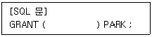
- CREATE TABLE TO
- CREATE TO
- CREATE FROM
- CREATE TABLE FROM
(정답률: 49%)
4과목: 프로그래밍 언어 활용
61. C언어에서 문자열 처리 함수의 서식과 그 기능의 연결로 틀린 것은?
- strlen(s) - s의 길이를 구한다.
- strcpy(s1, s2) - s2를 s1으로 복사한다.
- strcmp(s1, s2) - s1과 s2를 연결한다.
- strrev(s)－s를 거꾸로 변환한다.
(정답률: 45%)
62. 다음 C언어 프로그램이 실행되었을 때, 실행 결과는?
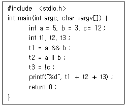
- ０
- ２
- ５
- 14
(정답률: 38%)
63. 다음 C언어 프로그램이 실행되었을 때, 실행 결과는?
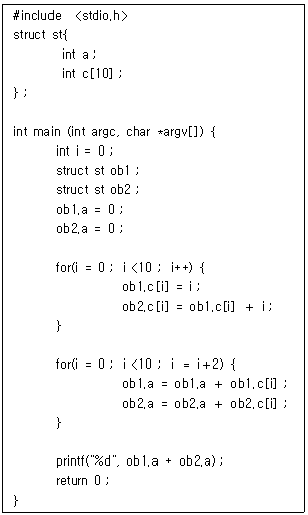
- 30
- 60
- 80
- 120
(정답률: 41%)
64. IP 프로토콜에서 사용하는 필드와 해당 필드에 대한 설명으로 틀린 것은?
- Header Length는 IP 프로토콜의 헤더 길이를 32비트 워드 단위로 표시한다.
- Packet Length는 IP 헤더를 제외한 패킷 전체의 길이를 나타내며 최대 크기는 232－1비트이다.
- Time To Live는 송신 호스트가 패킷을 전송하기 전 네트워크에서 생존할 수 있는 시간을 지정한 것이다.
- Version Number는 IP 프로토콜의 버전번호를 나타낸다.
(정답률: 34%)
65. 다음 Python 프로그램의 실행 결과가 [실행결과]와 같을 때, 빈칸에 적합한 것은?
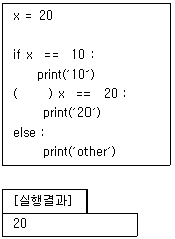
- either
- elif
- else if
- else
(정답률: 40%)
66. RIP 라우팅 프로토콜에 대한 설명으로 틀린 것은?
- 경로 선택 메트릭은 홉 카운트(hop count)이다.
- 라우팅 프로토콜을 IGP와 EGP로 분류했을 때 EGP에 해당한다.
- 최단 경로 탐색에 Bellman-Ford 알고리즘을 사용한다.
- 각 라우터는 이웃 라우터들로부터 수신한 정보를 이용하여 라우팅 표를 갱신한다.
(정답률: 37%)
67. 다음에서 설명하는 프로세스 스케줄링은?
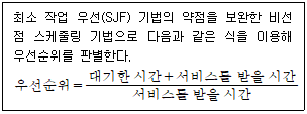
- FIFO 스케줄링
- RR 스케줄링
- HRN 스케줄링
- MQ 스케줄링
(정답률: 47%)
68. UNIX 운영체제에 관한 특징으로 틀린 것은?
- 하나 이상의 작업에 대하여 백그라운드에서 수행이 가능하다.
- Multi-User는 지원하지만 Multi-Tasking은 지원하지 않는다.
- 트리 구조의 파일 시스템을 갖는다.
- 이식성이 높으며 장치 간의 호환성이 높다.
(정답률: 49%)
69. UDP 프로토콜의 특징이 아닌 것은?
- 비연결형 서비스를 제공한다.
- 단순한 헤더 구조로 오버헤드가 적다.
- 주로 주소를 지정하고, 경로를 설정하는 기능을 한다.
- TCP와 같이 트랜스포트 계층에 존재한다.
(정답률: 37%)
70. Python 데이터 타입 중 시퀀스(Sequence) 데이터 타입에 해당하며 다양한 데이터 타입들을 주어진 순서에 따라 저장할 수 있으나 저장된 내용을 변경할 수 없는 것은?
- 복소수(complex) 타입
- 리스트(list) 타입
- 사전(dict) 타입
- 튜플(tuple) 타입
(정답률: 35%)
71. 다음 JAVA 프로그램이 실행되었을 때, 실행결과는?
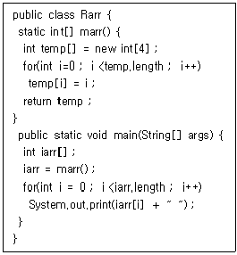
- 1 2 3 4
- 0 1 2 3
- 1 2 3
- 0 1 2
(정답률: 55%)
72. 다음 JAVA 프로그램이 실행되었을 때의 결과는?
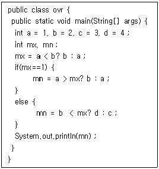
- 1
- 2
- 3
- 4
(정답률: 47%)
73. 다음 중 Myers가 구분한 응집도(Cohesion)의 정도에서 가장 낮은 응집도를 갖는 단계는?
- 순차적 응집도(Sequential Cohesion)
- 기능적 응집도(Functional Cohesion)
- 시간적 응집도(Temporal Cohesion)
- 우연적 응집도(Coincidental Cohesion)
(정답률: 56%)
74. 다음 C언어 프로그램이 실행되었을 때, 실행 결과는?
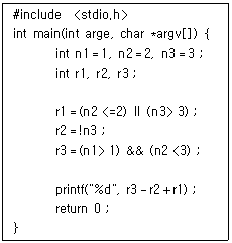
- 0
- 1
- 2
- 3
(정답률: 38%)
75. IP 프로토콜의 주요 특징에 해당하지 않는 것은?
- 체크섬(Checksum) 기능으로 데이터 체크섬(Data Checksum)만 제공한다.
- 패킷을 분할, 병합하는 기능을 수행하기도 한다.
- 비연결형 서비스를 제공한다.
- Best Effort 원칙에 따른 전송 기능을 제공한다.
(정답률: 32%)
76. 4개의 페이지를 수용할 수 있는 주기억장치가 있으며, 초기에는 모두 비어 있다고 가정한다. 다음의 순서로 페이지 참조가 발생할 때, LRU 페이지 교체 알고리즘을 사용할 경우 몇 번의 페이지 결함이 발생하는가?
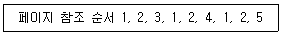
- 5회
- 6회
- 7회
- 8회
(정답률: 41%)
77. 사용자 수준에서 지원되는 스레드(thread)가 커널에서 지원되는 스레드에 비해 가지는 장점으로 옳은 것은?
- 한 프로세스가 운영체제를 호출할 때 전체 프로세스가 대기할 필요가 없으므로 시스템 성능을 높일 수 있다.
- 동시에 여러 스레드가 커널에 접근할 수 있으므로 여러 스레드가 시스템 호출을 동시에 사용할 수 있다.
- 각 스레드를 개별적으로 관리할 수 있으므로 스레드의 독립적인 스케줄링이 가능하다.
- 커널 모드로의 전환 없이 스레드 교환이 가능하므로 오버헤드가 줄어든다.
(정답률: 27%)
78. 한 모듈이 다른 모듈의 내부 기능 및 그 내부 자료를 참조하는 경우의 결합도는?
- 내용 결합도(Content Coupling)
- 제어 결합도(Control Coupling)
- 공통 결합도(Common Coupling)
- 스탬프 결합도(Stamp Coupling)
(정답률: 47%)
79. a[0]의 주소값이 10일 경우 다음 C언어 프로그램이 실행되었을 때의 결과는? (단, int 형의 크기는 4Byte로 가정한다.)
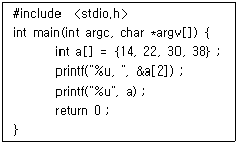
- 14, 10
- 14, 14
- 18, 10
- 18, 14
(정답률: 35%)
80. 모듈화(Modularity)와 관련한 설명으로 틀린 것은?
- 시스템을 모듈로 분할하면 각각의 모듈을 별개로 만들고 수정할 수 있기 때문에 좋은 구조가 된다.
- 응집도는 모듈과 모듈 사이의 상호의존 또는 연관 정도를 의미한다.
- 모듈 간의 결합도가 약해야 독립적인 모듈이 될 수 있다.
- 모듈 내 구성 요소들 간의 응집도가 강해야 좋은 모듈 설계이다.
(정답률: 36%)
5과목: 정보시스템 구축관리
81. 소프트웨어 개발에서 정보보안 3요소에 해당 하지 않는 설명은?
- 기밀성 : 인가된 사용자에 대해서만 자원 접근이 가능하다.
- 무결성 : 인가된 사용자에 대해서만 자원 수정이 가능하며 전송중인 정보는 수정되지 않는다.
- 가용성 : 인가된 사용자는 가지고 있는 권한 범위 내에서 언제든 자원 접근이 가능하다.
- 휘발성 : 인가된 사용자가 수행한 데이터는 처리 완료 즉시 폐기 되어야 한다.
(정답률: 49%)
82. 어떤 외부 컴퓨터가 접속되면 접속 인가 여부를 점검해서 인가된 경우에는 접속이 허용되고, 그 반대의 경우에는 거부할 수 있는 접근제어 유틸리티는?
- tcp wrapper
- trace checker
- token finder
- change detector
(정답률: 30%)
83. 기기를 키오스크에 갖다 대면 원하는 데이터를 바로 가져올 수 있는 기술로 10㎝ 이내 근접 거리에서 기가급 속도로 데이터 전송이 가능한 초고속 근접무선통신(NFC : Near Field Communication) 기술은?
- BcN(Broadband Convergence Network)
- Zing
- Marine Navi
- C-V2X(Cellular Vehicle To Everything)
(정답률: 28%)
84. 취약점 관리를 위한 응용 프로그램의 보안 설정과 가장 거리가 먼 것은?
- 서버 관리실 출입 통제
- 실행 프로세스 권한 설정
- 운영체제의 접근 제한
- 운영체제의 정보 수집 제한
(정답률: 47%)
85. 소프트웨어 개발 프레임워크와 관련한 설명으로 가장 적절하지 않은 것은?
- 반제품 상태의 제품을 토대로 도메인별로 필요한 서비스 컴포넌트를 사용하여 재사용성 확대와 성능을 보장 받을 수 있게 하는 개발 소프트웨어이다.
- 라이브러리와는 달리 사용자 코드에서 프레임워크를 호출해서 사용하고, 그에 대한 제어도 사용자 코드가 가지는 방식이다.
- 설계 관점에 개발 방식을 패턴화시키기 위한 노력의 결과물인 소프트웨어 디자인 패턴을 반제품 소프트웨어 상태로 집적화시킨 것으로 볼 수 있다.
- 프레임워크의 동작 원리를 그 제어 흐름의 일반적인 프로그램 흐름과 반대로 동작한다고 해서 IoC(Inversion of Control)이라고 설명하기도 한다.
(정답률: 30%)
86. 클라우드 기반 HSM(Cloud-based Hardware Security Module)에 대한 설명으로 틀린 것은?
- 클라우드(데이터센터) 기반 암호화 키 생성, 처리, 저장 등을 하는 보안 기기이다.
- 국내에서는 공인인증제의 폐지와 전자서명법 개정을 추진하면서 클라우드 HSM 용어가 자주 등장하였다.
- 클라우드에 인증서를 저장하므로 기존 HSM 기기나 휴대폰에 인증서를 저장해 다닐 필요가 없다.
- 하드웨어가 아닌 소프트웨어적으로만 구현되기 때문에 소프트웨어식 암호 기술에 내재된 보안 취약점을 해결할 수 없다는 것이 주요 단점이다.
(정답률: 45%)
87. 다음 내용이 설명하는 기술로 가장 적절한 것은?
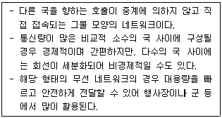
- Virtual Local Area Network
- Simple Station Network
- Mesh Network
- Modem Network
(정답률: 48%)
88. 물리적 위협으로 인한 문제에 해당하지 않는 것은?
- 화재, 홍수 등 천재지변으로 인한 위협
- 하드웨어 파손, 고장으로 인한 장애
- 방화, 테러로 인한 하드웨어와 기록장치를 물리적으로 파괴하는 행위
- 방화벽 설정의 잘못된 조작으로 인한 네트워크, 서버 보안 위협
(정답률: 57%)
89. 악성코드의 유형 중 다른 컴퓨터의 취약점을 이용하여 스스로 전파하거나 메일로 전파되며 스스로를 증식하는 것은?
- Worm
- Rogue Ware
- Adware
- Reflection Attack
(정답률: 52%)
90. 다음 설명에 해 당하는 공격기법은?
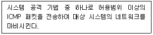
- Ping of Death
- Session Hijacking
- Piggyback Attack
- XSS
(정답률: 48%)
91. 다음 설명에 해당하는 소프트웨어는?
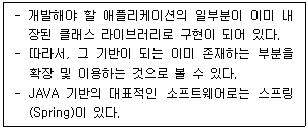
- 전역 함수 라이브러리
- 소프트웨어 개발 프레임워크
- 컨테이너 아키텍처
- 어휘 분석기
(정답률: 50%)
92. 소프트웨어 개발 방법론 중 애자일(Agile) 방법론의 특징과 가장 거리가 먼 것은?
- 각 단계의 결과가 완전히 확인된 후 다음 단계 진행
- 소프트웨어 개발에 참여하는 구성원들 간의 의사소통 중시
- 환경 변화에 대한 즉시 대응
- 프로젝트 상황에 따른 주기적 조정
(정답률: 55%)
93. 대칭 암호 알고리즘과 비대칭 암호 알고리즘에 대한 설명으로 틀린 것은?
- 대칭 암호 알고리즘은 비교적 실행 속도가 빠르기 때문에 다양한 암호의 핵심 함수로 사용될 수 있다.
- 대칭 암호 알고리즘은 비밀키 전달을 위한 키 교환이 필요하지 않아 암호화 및 복호화의 속도가 빠르다.
- 비대칭 암호 알고리즘은 자신만이 보관하는 비밀키를 이용하여 인증, 전자서명 등에 적용이 가능하다.
- 대표적인 대칭키 암호 알고리즘으로는 AES, IDEA 등이 있다.
(정답률: 23%)
94. 두 명의 개발자가 5개월에 걸쳐 10000 라인의 코드를 개발하였을 때, 월별(man-month) 생산성 측정을 위한 계산 방식으로 가장 적합한 것은?
- 10000／2
- 10000／(5×2)
- 10000／5
- (2×10000)／5
(정답률: 55%)
95. 접근 통제 방법 중 조직 내에서 직무, 직책 등 개인의 역할에 따라 결정하여 부여하는 접근 정책은?
- RBAC
- DAC
- MAC
- QAC
(정답률: 32%)
96. COCOMO(Constructive Cost Model) 모형의 특징이 아닌 것은?
- 프로젝트를 완성하는데 필요한 man-month로 산정 결과를 나타낼 수 있다.
- 보헴(Boehm)이 제안한 것으로 원시코드 라인 수에 의한 비용 산정 기법이다.
- 비교적 작은 규모의 프로젝트 기록을 통계 분석하여 얻은 결과를 반영한 모델이며 중소 규모 소프트웨어 프로젝트 비용 추정에 적합하다.
- 프로젝트 개발유형에 따라 object, dynamic, function의 3가지 모드로 구분한다.
(정답률: 34%)
97. 각 사용자 인증의 유형에 대한 설명으로 가장 적절하지 않은 것은?
- 지식 : 주체는 '그가 알고 있는 것'을 보여주며 예시로는 패스워드, PIN 등이 있다.
- 소유 : 주체는 '그가 가지고 있는 것'을 보여주며 예시로는 토큰, 스마트카드 등이 있다.
- 존재 : 주체는 '그를 대체하는 것'을 보여주며 예시로는 패턴, QR 등이 있다.
- 행위 : 주체는 '그가 하는 것'을 보여주며 예시로는 서명, 움직임, 음성 등이 있다.
(정답률: 52%)
98. 시스템의 사용자가 로그인하여 명령을 내리는 과정에 대한 시스템의 동작 중 다음 설명에 해당하는 것은?
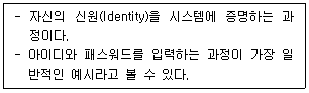
- Aging
- Accounting
- Authorization
- Authentication
(정답률: 31%)
99. 다음에서 설명하는 IT 기술은?
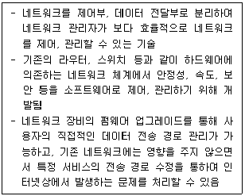
- SDN(Software Defined Networking)
- NFS(Network File System)
- Network Mapper
- AOE Network
(정답률: 37%)
100. 프로젝트 일정 관리 시 사용하는 PERT 차트에 대한 설명에 해당하는 것은?
- 각 작업들이 언제 시작하고 언제 종료되는지에 대한 일정을 막대 도표를 이용하여 표시한다.
- 시간선(Time-line) 차트라고도 한다.
- 수평 막대의 길이는 각 작업의 기간을 나타낸다.
- 작업들 간의 상호 관련성, 결정경로, 경계시간, 자원할당 등을 제시한다.
(정답률: 34%)